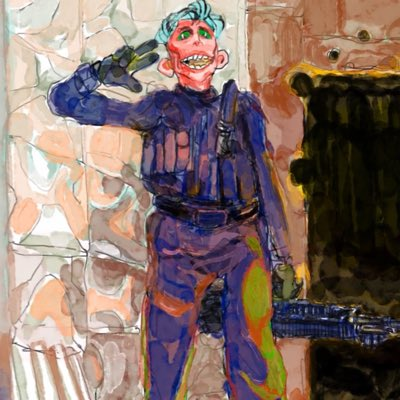

Who I Am
Hello, I'm Craiko, an 18-year-old YouTuber. I started my YouTube journey by creating Let's Play videos of Wii U games, recording them on my mom's iPad. Although I had some initial success, I had to shut down my account.
During COVID, I revived my channel with my Gamertag, Craiko, and uploaded videos occasionally. However, I've decided to take YouTube seriously and have a lot of fun doing it.
Why This Site
I created this website to share my thoughts with the world and because I hate that YouTube won't let me customize my page and YT posts are lacking. I will be updating frequently, and I am setting up a Discord server so I can talk to people who watch my videos and facilitate philosophical discussions.
What's Next
I'm actively working on new content, developing my series "Embrace Happiness," and exploring creative projects that blend gaming, storytelling, and authentic connection with my audience.